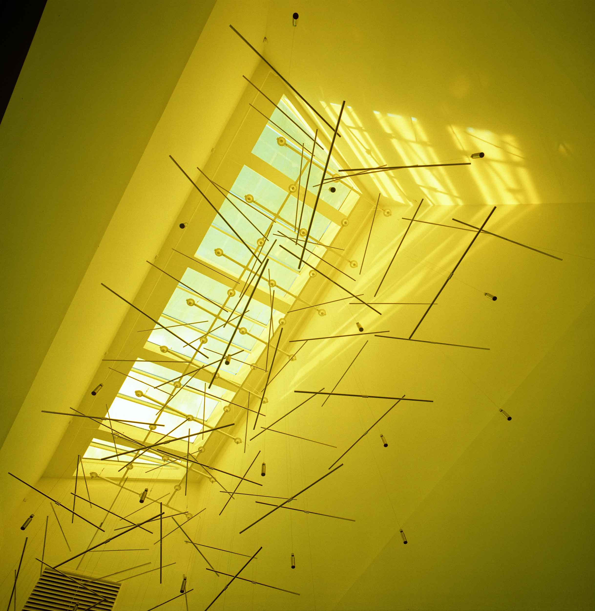
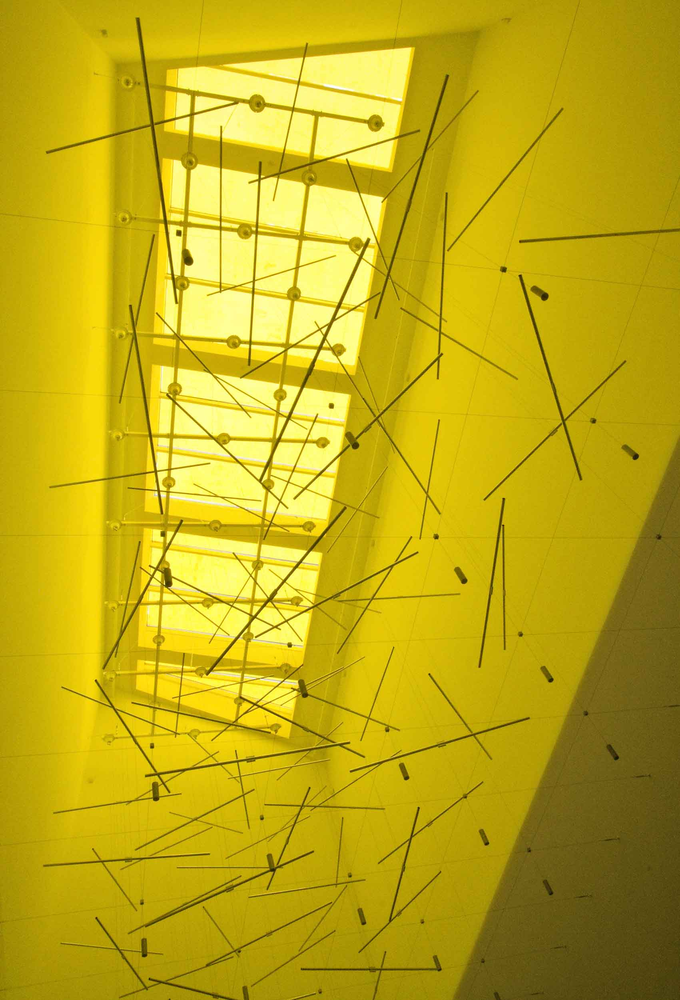

Bryggen, Vejle
2008
Stainless steel bars, stainless wire, magnets, electronic motors, aluminium structure, color filter
Dimensions: 12 x 5 x 7 m
The commissioned artwork for Bryggen shopping mall is situated in the large glass covered abyss above the
lobby space. The abyss is giving natural light to the lobby through the parking floors above.
Architecturally
the abyss space is a combination of closeness and openness, being simultaneously a strangely shaped vertical
room and opening from lobby to the open sky.
The artwork consists of 114 balanced horizontal stainless steel bars which are hanged from the ceiling by
thin, hardly visible 1,0mm stainless steel wires. The polished stainless steel bars are 1,5 meters in length
and 20 mm in diameter.
The 36 wires hang from as many electric motors connected to a aluminium construction, which is attached to
the
beams supporting roof and skylight window. This construction keeps the wires on equal distance of each
other.
This is essential because in certain positions the bars almost, but not quite, touch each other. There are
three bars connected to each wire with about 2 meters distance from each other. In some wires the tubes are
on
different height than in others, so that the grid consists of 6 overlapping layers of stainless steel bars.

The horizontal bars rotate freely on the wires. This slow rotation is originally caused by electric motors
to which the wires are attached. The rotation of the bars is made unpredictable by small permanent magnets
embedded to both ends of each bar. The magnets have always same pole facing outwards and when the ends of
two bars come close the magnets try to avoiding each other changing the direction or speed of the rotation. This
affects the rotation of other tubes near by, also on upper and lower levels due to coiling of the wire. This
is how the whole installation makes a large chaotic system. Following the slow, random movement of the
artwork is a meditatative experience.
The character of the natural light was manipulated by color filter mounted to the skylight window. The
coloured light turned the abyss space monochromatic warm yellow and made the artwork stand out from rest of
the building.
